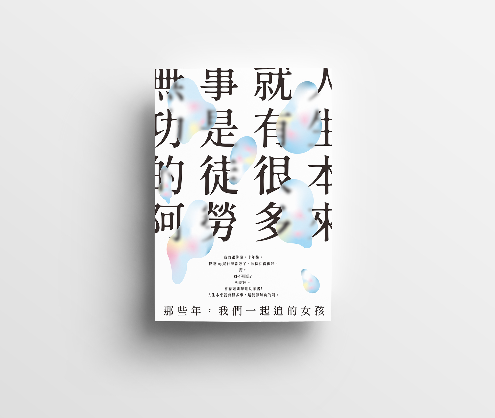
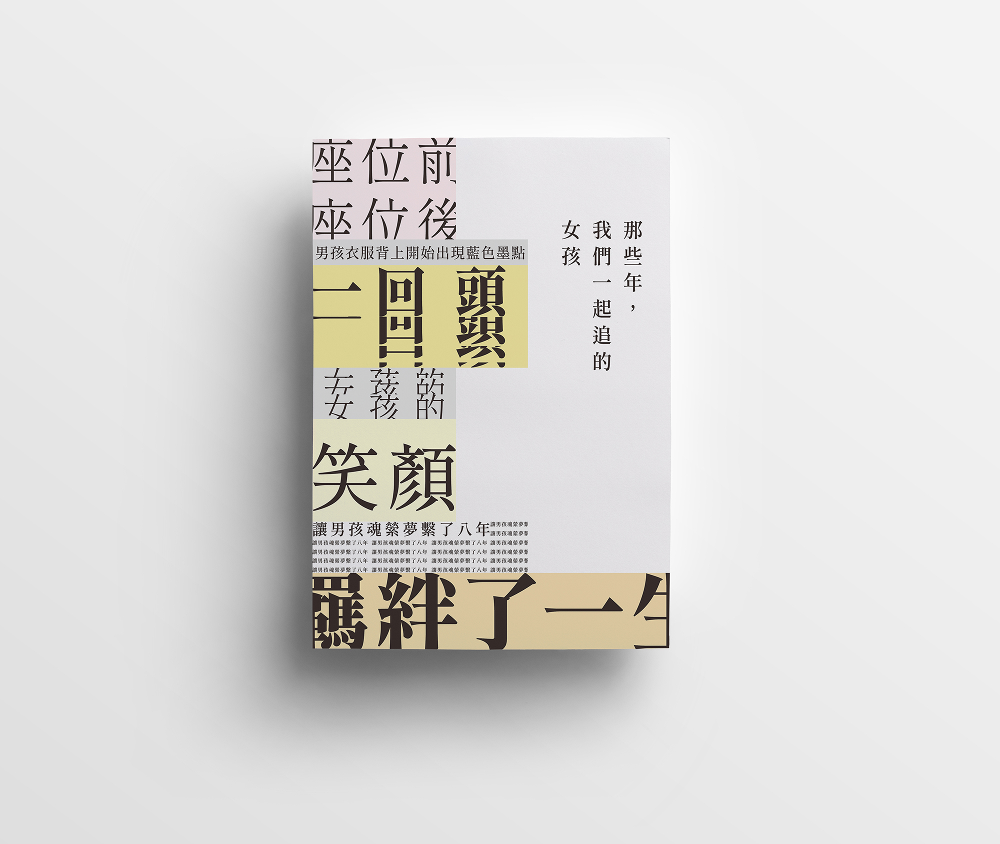
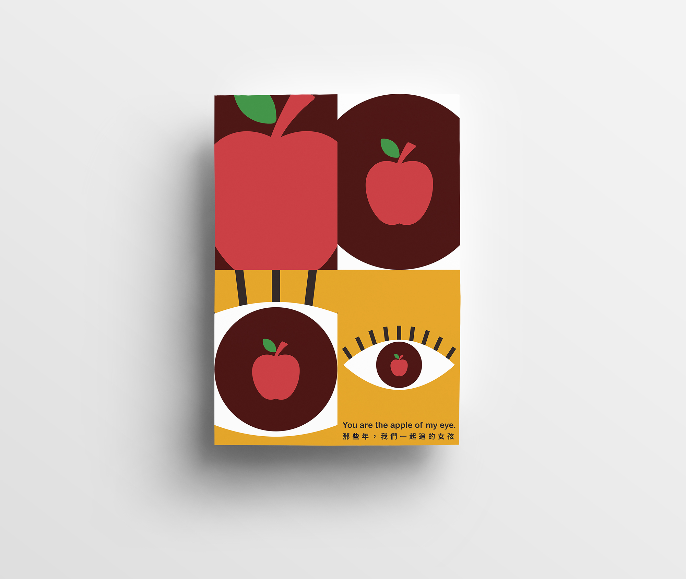

那些年，我們一起追的女孩 | 系列海報
意象分析
以網格分割，將語錄出血排版，與底下的小字成為對比，增添韻律感。 徒勞無功讓人有種空虛的感覺，聯想到泡泡的虛幻感以及轉瞬即逝，將泡泡作為遮罩壓在文字上，並將文字模糊化，更加凸顯虛無縹緲之感。
意象分析
以網格分割，將語錄重複、堆疊或出血排版，大量文字類似報紙文章排版，因此選用灰色為底色，色塊以大地色系搭配，營造出單純、質樸之感，傳達出靑春純眞樸實的氛圍。
意象分析
以「眼中的蘋果」為主要概念，分割四格畫面，模仿長鏡頭由近而遠漸漸看清全貌，才赫然發現原來眼中珍藏著蘋果，代表珍藏在心底心意。
